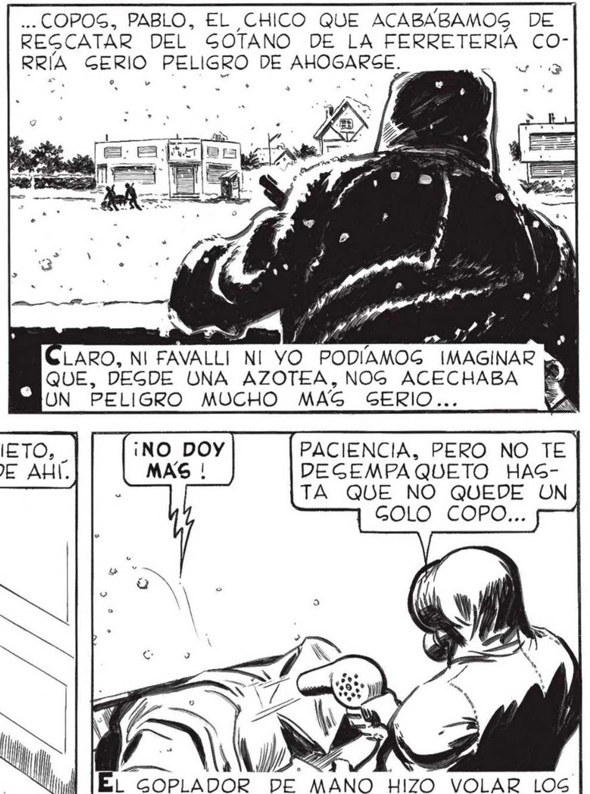
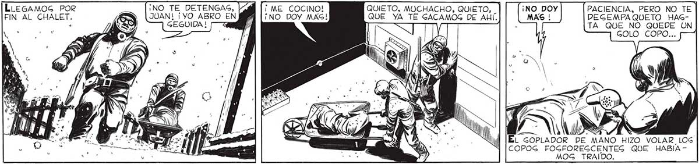
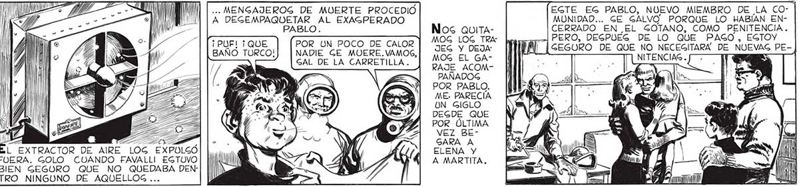

52 e. —_— == TR A . COPOS, PABLO, EL CHICO QUE ACABABAMOS DE REGCATAR DEL SOTANO DE LA FERRETERIA CORRÍA GERIO PELIGRO DE AHOGARGSE. ; CORRIMOS A TODO LO QUE PUDIMOG. EN- . cr a | pa MD , LARO, NI FAVALLI_ NI YO PODÍAMOG IMAGINAR Ñ QUE Ke 10 TOCABAN LOS MORTEROS y A AE QUE, DEGDE UNA AZOTEA, NOG ACECHABA PP UN PELIGRO MUCHO MAG GERIO... LLEGAMOG POR ¡NO TE DETENGAG, FIN AL CHALET. JUAN! ¡YO ABRO EN | GEGUIDA ! ¡ ME COCINO! PACIENCIA, PERO NO TE ¡NO DOY MAG! DEGEMPAQUETO HAGTA QUE NO QUEDE UN GOLO COPO... COPOG FOGFOREGCENTES QUE HABÍA MOG TRAIDO. y 7) .. MENGAJEROG DE MUERTE PROCEDIO EGTE EG PABLO, NUEVO MIEMBRO DE LA COA DEGEMPAQUETAR AL EXAGPERADO MUNIDAD... GE GALVO. PORQUE LO HABÍAN ENNos QUITA- CERRADO EN _EL GOTANO, CONO PENITENCIA. a MOG LOG TRA" hores —| PERO, DEGPUEG DE LO QUE PAGO, EGTOY A o al A [cEsoRO DE QUE NO NECEGITARA DE NUEVAG PEBAÑO TURCO!) | NADIE GE MUERE.VAMOS, ] SAL DE LA CARRETILIA. | DA Ol e 2 | NITENCIAS. f —, -) RAJE Acom- PMI a ] PAÑADOS POR PABLO. ME: PARECÍA UN GIGLO DEGDE QUE POR ÚLTIMA VEZ BEGARA A ELENA Y A MARTITA. Ñl Wi ING ss a A SÓ ” É EXTRACTOR DE AIRE LOG EXPULGÓ FUERA. GOLO CUANDO FAVALLI EGTUVO BIEN GEGURO QUE NO QUEDABA DEN: TRO NINGUNO DE AQUELLOG ...


